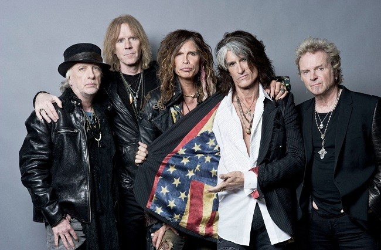

| Led Zeppelin | Queen | Black Sabbath | Aerosmith | About me |
Aerosmith
Aerosmith — американская рок-группа.Стивен Талларико (Тайлер), Джо Перри и Том Хэмилтон впервые встретились в городке Сьюнапи в конце 1960-х годов. Первый приехал из Нью-Йорка, второй из Массачусетса, а третий из Нью-Хэмпшира. В 1970 они решили объединиться в группу. Гитарист Брэд Уитфорд с барабанщиком Джоем Крамером дополнили состав, и в 1973 Aerosmith записали свой дебютный одноимённый альбом.
За следующие годы группа выпустила ряд успешных пластинок, много гастролировала и пользовалась большой популярностью, но потом столкнулась с проблемами наркотической и алкогольной зависимости, которые чуть не стали причиной распада. В тяжёлый период 1979—1984 Перри и Уитфорд ушли из Aerosmith, но во многом благодаря усилиям менеджера Тима Коллинза оригинальный состав был восстановлен, и группа фактически возродилась. С тех пор Aerosmith добились даже большего, чем в 70-е.
Группа получила 4 Грэмми. Aerosmith оказали сильное влияние на развитие разных музыкальных направлений, сочетая в своём творчестве элементы хард-рока, хеви-метала, поп-музыки, глэма и блюза.

Оригинальный состав группы.
Walk this way